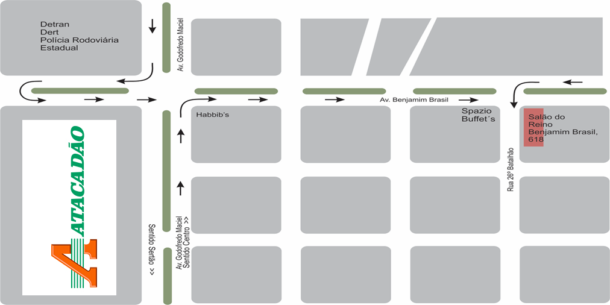

Convite
Discurso Público
Prezados irmãos,
É um prazer convidar um dos oradores de sua congregação para proferir um discurso público em nossa congregação. Com certeza será uma ocasião de edificação espiritual para os irmãos locais (Rom. 1:11).
Agradecemos de antemão os esforços dos irmãos em colaborar com este arranjo teocrático.
Tema do discurso
Data
Horário
Local
Mapa – como chegar

Contatos
Importante
Favor confirmar o recebimento deste convite por WhatsApp, telefone ou e-mail.
Faça arranjos para ficar até o final da reunião, pois a congregação oferecerá um lanche para o orador e família.
Agradecemos e enviamos o nosso caloroso amor cristão.
Seus irmãos